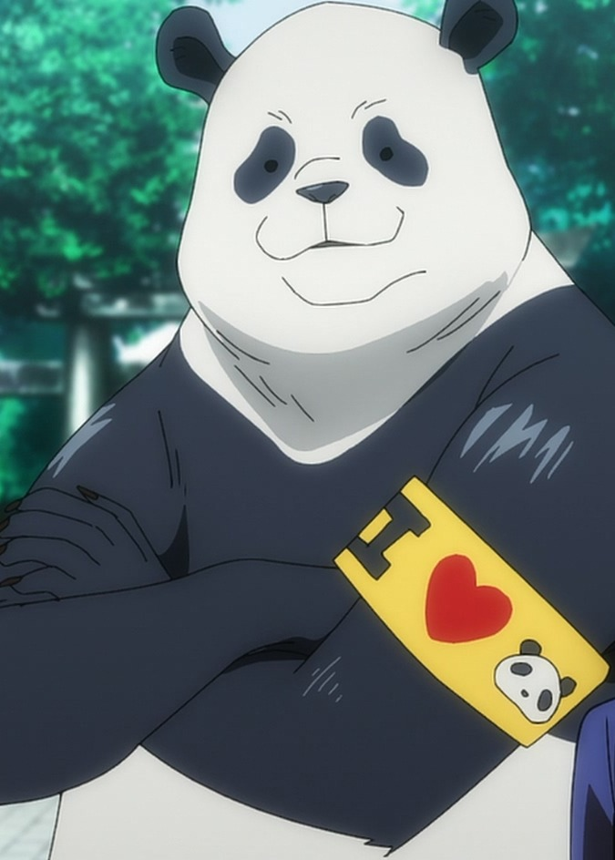
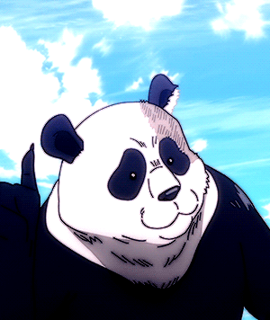
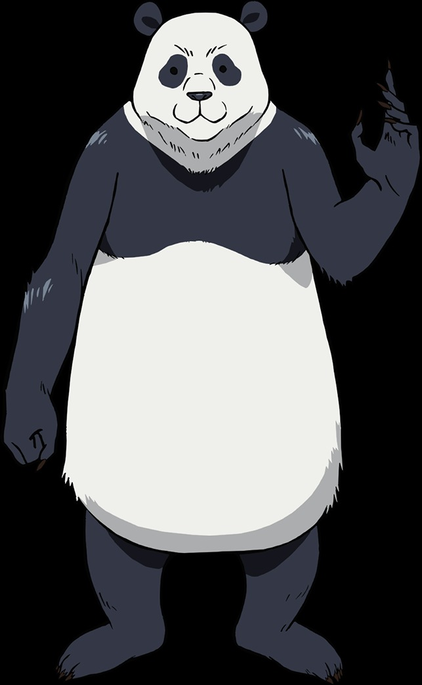
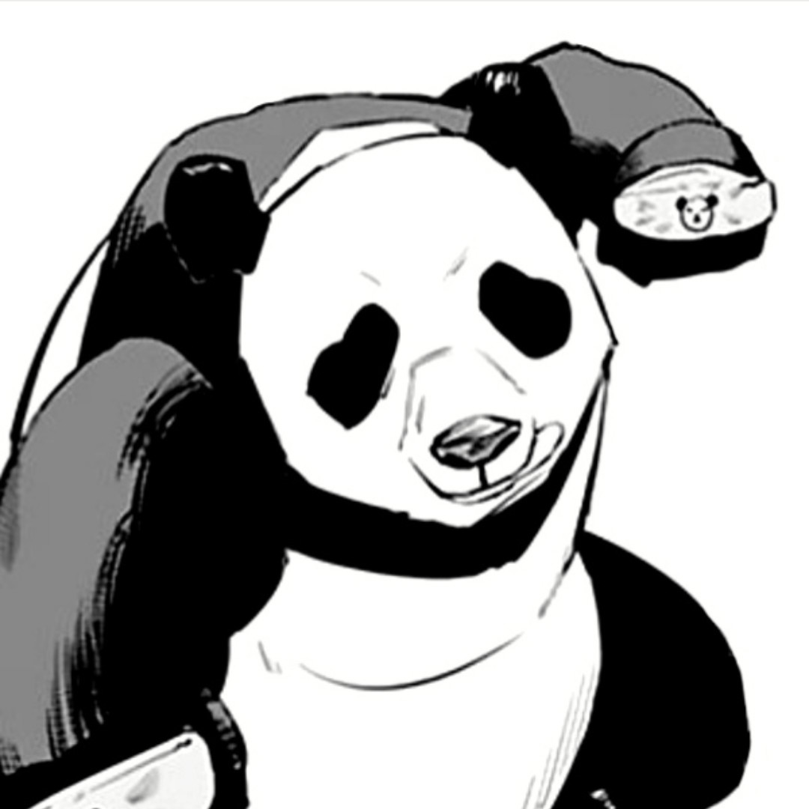
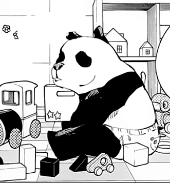
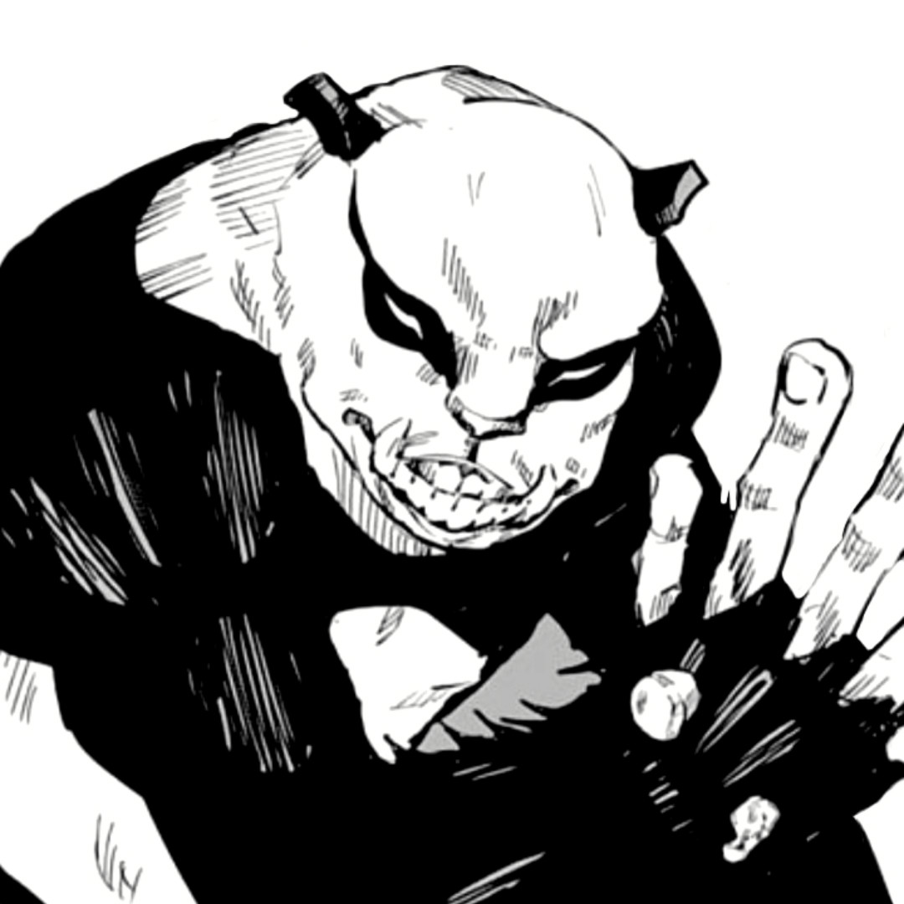
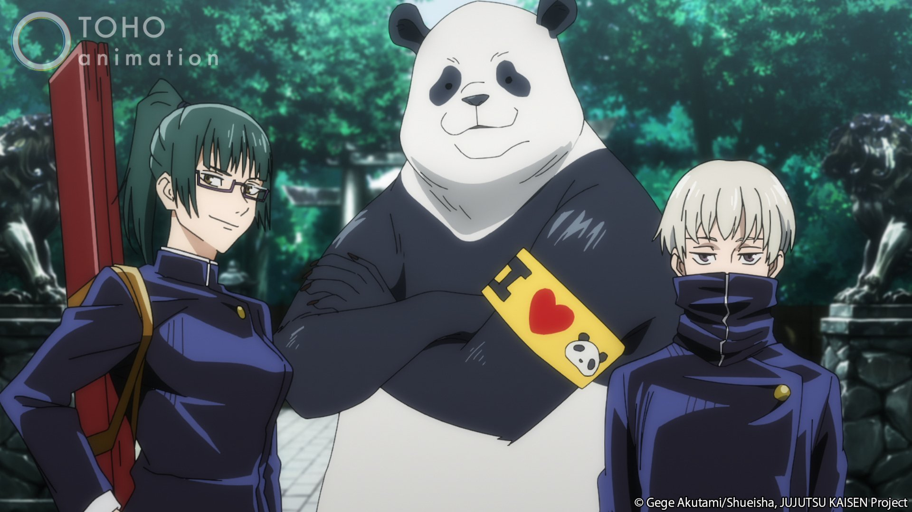
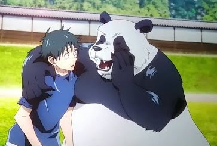

Panda (パンダ Panda?) es uno de los personajes de la serie manga
Tokyo Metropolitan Curse Technical School y su serie secuela,
Jujutsu Kaisen. Es un estudiante de segundo año del Colegio
Técnico de Magia Metropolitana de Tokio y compañero de Maki
Zenin, Toge Inumaki y Yuta Okkotsu.
Es un Cuerpo Maldito que posee emociones y consciencia propia, y
debido a esto, es considerado la mejor creación del Director,
Masamichi Yaga. Su interior está compuesto por tres núcleos: el
hermano menor "Panda", el hermano mayor "Gorila" y la hermana
mayor "Triceratops".
Apariencia

Imagen de Panda
Panda es un cuerpo maldito con el aspecto de un Panda, pese a eso
se lo ha visto usar ropa y accesorios en reiteradas ocasiones.
Suele llevar puesto un brazalete en el brazo que dice
"I love Panda".
Durante el invierno se lo ha visto llevar ropa abrigada, como una
chaqueta de color claro, y una bufanda con un patrón de caras de
panda.
Durante combate, Panda utiliza dos bandas alrededor de sus
nudillos con la cara de un panda en ellos.
Cuando Gorila tiene el control del cuerpo, su estructura se ve
mucho más musculosa. Los círculos negros de sus ojos se
extienden hasta sus orejas, y sus ojos se hacen mucho más
alargados y visibles. Su mandíbula se extiende hacia adelante lo
que hace que sus dientes sean más visibles y tiene ambos
colmillos afilados. El pelaje de sus antebrazos se ve más
alborotado y abultado y sus dedos y manos son blancas
Personalidad

La personalidad de Panda es siempre alegre y
divertida
Panda es una persona amable, afectuosa, empática y sabia. Suele
ser un travieso a veces y bromear mucho. No se considera humano
además de que nunca a tenido celos de estos y hasta por la
capacidad sentimental que los humanos poseen llega a sentir
repulsión, además de que no los llega a entender del todo.
Pese al comportamiento hostil de Mechamaru, nunca demostró un
odio hacia éste, sino que intento entender su odio en todo
momento
Atsuya Kusakabe ha dicho que, pese a ser un cuerpo maldito, tiene
un corazón más humano que él.
Habilidades
Habilidad
Descripción
Imagen
Modo Panda
Es el núcleo principal y el que suele utilizar
como apariencia. No posee habilidades que le
haga destacar del resto, además de poseer un
alto nivel en su fuerza y agilidad. Ésta
apariencia le permite ejercer como un chamán
balanceado.
Modo gorila
Es el segundo núcleo que compone a su cuerpo y
conocido como hermano mayor. Su apariencia
cambia notablemente a la de un gorila
convirtiéndose en un chaman enfocado en el poder
para combates cuerpo a cuerpo. A diferencia de
sus otros núcleos, consume mucho más rápido la
energía maldita.Con esta apariencia es capaz de
utilizar como técnica:
Ritmo de Tambor:
Cuando lanza un ataque físico,
el retumbe provocado por el
golpe, resuene en todo el cuerpo
de su objetivo. También es capaz
de golpear al suelo para
provocar el mismo retumbe en
varios objetivos.
Imagenes de Panda

Diseño de Panda (Anime)

Diseño de Panda (Manga)

Panda de pequeño

Panda usando modo gorila

Panda y su equipo

Panda con Yuta
Curiosidades
Según información revelada en el Volumen 05 del
manga:
Es un panda.
Según información revelada en el Jujutsu Kaisen
Official
Fanbook:
Su cumpleaños es el 05 de Marzo.
Es un chamán de casi-segundo grado.
Su maldición celestial le otorgó talento
físico.
Su modo de inscripción al Colegio de Tokio fue
porque el directo solicitó la inscripción por
él.
Su pasatiempo es coleccionar mercancía de Panda.
Su comida favorita es la Kolbasa (salsa rusa
semi-seca).
Su comida menos favorita son las hojas de bambú.
Su causa de estrés proviene de tener que adular
a otros animales que no sean pandas.